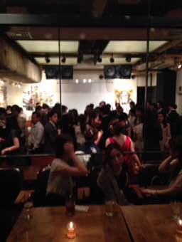
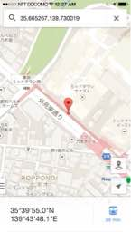
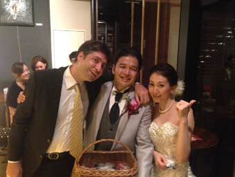
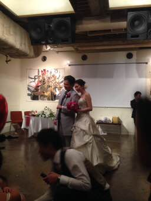

PARTICIPANTS:
DB ID: 0
Current name: You
Address book name: You
User name:
Phone Number:
Key:
DB ID: 29
Current name: nachi
Address book name: None
User name: nachi
Phone Number:
Key:
DB ID: 599
Current name: Akiko Ayabe
Address book name: None
User name: Akiko Ayabe
Phone Number:
Key:
DB ID: 396
Current name: Takashi Shinada
Address book name: None
User name: Takashi Shinada
Phone Number:
Key:
DB ID: 597
Current name: 豊田領祐
Address book name: None
User name: 豊田領祐
Phone Number:
Key:
DB ID: 70
Current name:
Address book name:
User name: H.Ave
Phone Number:
Key:
DB ID: 465
Current name: Mayumi
Address book name: まゆみ 中野駅
User name: Mayumi
Phone Number: 09025450495
Key: 090-254-50495
DB ID: 16
Current name: AMI
Address book name: Ami
User name: AMI
Phone Number: 09066582135
Key: 090 6658 2135
DB ID: 468
Current name: Takashi Inoue
Address book name: None
User name: Takashi Inoue
Phone Number:
Key:
Messages:
2014/09/30 23:47:52, "0:You":
nachi invited toni, Ami, ひろみ あべ, 天木 美里, Takashi Shinada, まゆみ 中野駅, Takashi Inoue, 豊田領祐, 川北正勝, Akiko Ayabe to the group.
2014/09/30 23:47:58, "29:nachi":
皆様こんばんはCony happy✨
すでにご存知の方もいらっしゃるかと思いますが、8月に入籍し、11月に結婚式の二次会を行います！
皆様にぜひお会いしたくご連絡させていただいた次第でございます♥️
⚫︎日程 11月8日(土)
⚫︎時間
受付20:00,開宴20:30
⚫︎会場 NOS 恵比寿
⚫︎アクセス
〒150-0022
渋谷区恵比寿南2-3-14コンツェ恵比寿B1
JR恵比寿駅西口徒歩3分
地下鉄日比谷線恵比寿駅西口徒歩3分
東急東横線代官山駅12分
⚫︎TEL 03-5773-1727
⚫︎会費
男性:¥10000,女性:¥8000
⚫︎アクセスMAP
http://r.gnavi.co.jp/g045630/map/
尚、誠に勝手ながら参加の有無を10月18日(土)までに教えていただければと思います。よろしくお願い致します
2014/10/01 00:03:22, "599:Akiko Ayabe":
なちおめでとう✨
2014/10/01 00:03:31, "599:Akiko Ayabe":
りょ❤︎
2014/10/01 00:04:35, "29:nachi":
ありがとう♥️
式の準備やらなんやらで、撮影協力出来てなくてごめんねCony sad
返信は個別でもここでも可
2014/10/01 00:06:17, "396:Takashi Shinada":
え？いくわ。
2014/10/01 00:07:07, "29:nachi":
サンクス♥️
2014/10/01 00:07:35, "29:nachi":
可愛い子ちゃんたくさん呼んどく♥️
2014/10/01 00:07:47, "599:Akiko Ayabe":
Nosよく行くわww
2014/10/01 00:07:59, "29:nachi":
あ、まぢ？w
2014/10/01 00:08:12, "599:Akiko Ayabe":
スタッフ皆いい感じょw
2014/10/01 00:08:37, "599:Akiko Ayabe":
日程わかったらmailするね❤︎ヨッ❤︎新妻❤︎
2014/10/01 00:10:49, "29:nachi":
2014/10/01 00:23:27, "597:豊田領祐":
いってやるよー！
2014/10/01 00:25:21, "29:nachi":
上から！w
2014/10/01 00:25:24, "29:nachi":
サンクス♥️
2014/10/01 00:58:32, "0:You":
Nachi!
2014/10/01 07:04:01, "70:":
おめでとう！
調整しまーす
2014/10/01 07:35:10, "29:nachi":
お願いしゃーすCony happy
2014/10/01 09:19:50, "465:Mayumi":
なち〜〜〜キラキラキラキラキラキラ
おめでとう結婚ハッピーハート
すご〜く行きたいけど、奄美大島で結婚式があるの汗なちのお祝いしたかったから残念
当日楽しんでね
2014/10/01 09:20:47, "70:":
それ行きたい！
2014/10/01 09:21:37, "465:Mayumi":
w
2014/10/01 13:37:27, "29:nachi":
まゆみちゃん、了解Cony happy♥️
2014/10/18 14:50:04, "599:Akiko Ayabe":
ごめん！
2014/10/18 14:50:09, "599:Akiko Ayabe":
いけない…涙
2014/10/18 14:50:31, "599:Akiko Ayabe":
別途、お祝いさせてくださいませ。
2014/10/18 15:36:11, "29:nachi":
あきちゃん、オッケーCony happy
2014/10/18 19:25:23, "599:Akiko Ayabe":
ごめんね！必ずお祝いさせて！
2014/10/18 19:31:38, "29:nachi":
2014/11/05 20:25:19, "0:You":
二次会は
この土曜日だよ！
2014/11/05 20:53:39, "599:Akiko Ayabe":
知ってるよー。残念ながら行けない、、、涙
2014/11/05 20:53:57, "599:Akiko Ayabe":
なちおめでとう❤︎別途お祝いね！
2014/11/05 22:00:53, "29:nachi":
2014/11/05 22:22:23, "0:You":
楽しみに！
2014/11/05 22:24:32, "29:nachi":
2014/11/08 15:02:31, "597:豊田領祐":
すいませーーーん
どなたか今日の時間と場所教えてもらってもいーでしょうか？？
2014/11/08 15:02:56, "597:豊田領祐":
機種変でログ見れなくて
恵比寿に8時くらいって記憶だけです！
2014/11/08 15:03:22, "0:You":
川北正勝 left the chat.
2014/11/08 15:15:53, "599:Akiko Ayabe":
皆様こんばんはCony happy✨
すでにご存知の方もいらっしゃるかと思いますが、8月に入籍し、11月に結婚式の二次会を行います！
皆様にぜひお会いしたくご連絡させていただいた次第でございます♥️
⚫︎日程 11月8日(土)
⚫︎時間
受付20:00,開宴20:30
⚫︎会場 NOS 恵比寿
⚫︎アクセス
〒150-0022
渋谷区恵比寿南2-3-14コンツェ恵比寿B1
JR恵比寿駅西口徒歩3分
地下鉄日比谷線恵比寿駅西口徒歩3分
東急東横線代官山駅12分
⚫︎TEL 03-5773-1727
⚫︎会費
男性:¥10000,女性:¥8000
⚫︎アクセスMAP
http://r.gnavi.co.jp/g045630/map/
尚、誠に勝手ながら参加の有無を10月18日(土)までに教えていただければと思います。よろしくお願い致します
2014/11/08 15:16:02, "0:You":
Akiko Ayabe left the chat.
2014/11/08 19:14:39, "0:You":
久しぶりにネクタイを締める
2014/11/08 19:25:01, "70:":
忘れてた〜
2次会いけたらー
2014/11/08 20:07:20, "16:AMI":
なちごめんー風邪でダウンして行けないー
2014/11/08 20:07:50, "16:AMI":
オヤジ会で絶対お祝いするから！！！！
2014/11/08 20:08:03, "16:AMI":
今日は本当におめでとう❤️✨
2014/11/08 20:10:28, "70:":
次回オヤジ会で！w
2014/11/08 20:24:38, "468:Takashi Inoue":
仕事でいけず、、
次回オヤジ会はぜひ！
2014/11/08 20:37:16, "0:You":
スゲー
2014/11/08 20:37:20, "0:You":
You sent a photo.
2014/11/08 20:38:17, "0:You":
You sent a photo.
2014/11/08 22:37:02, "0:You":
You sent a photo.
2014/11/08 22:37:03, "0:You":
You sent a photo.
2014/11/08 22:38:35, "0:You":
これで終わったね。
またナチがあべ会に戻って来てくれたらいいね！
2014/11/08 22:38:48, "16:AMI":
2014/11/08 22:41:57, "396:Takashi Shinada":
2014/11/08 22:43:07, "70:":
ネクタイめずらしー
2014/11/08 23:40:30, "465:Mayumi":
2014/11/08 23:46:42, "468:Takashi Inoue":
2014/11/09 15:03:15, "29:nachi":
トニー！来てくれてありがとう全然声かけてくれないから、最後の最後で気付いたよーお酒のプレゼントもありがとね♥️うちの旦那お酒好きだからめっちゃ喜んでたよーCony happy
あきちゃんも最後来てくれてありがとう♥️会えて嬉しかったよ
2014/11/09 16:15:52, "0:You":
2014/12/10 08:33:56, "0:You":
ひろみ あべ left the chat.